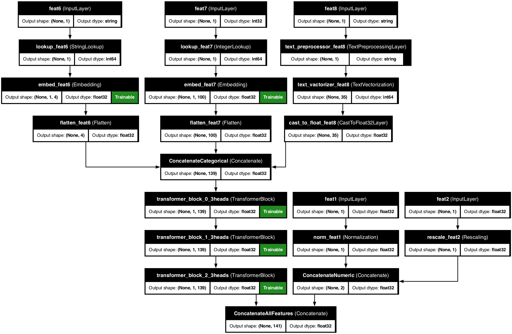
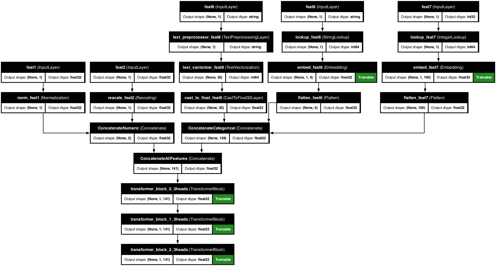

ü§ñ TransformerBlocks üåü
You can add transformer blocks to your preprocessing model by simply defining required configuration when initializing the Preprocessor class:
with the following arguments:
-
transfo_nr_blocks(int): The number of transformer blocks in sequence (default=None, transformer block is disabled by default). -
transfo_nr_heads(int): The number of heads for the transformer block (default=3). -
transfo_ff_units(int): The number of feed forward units for the transformer (default=16). -
transfo_dropout_rate(float): The dropout rate for the transformer block (default=0.25). -
transfo_placement(str): The placement of the transformer block withe the following options:CATEGORICAL-> only after categorical and text variablesALL_FEATURES-> after all concatenated features).
This used a dedicated TransformerBlockLayer to handle the transformer block logic.
üíª Code Examples:
1 2 3 4 5 6 7 8 9 10 11 12 13 | |
There are two options for the transfo_placement argument controlled using TransformerBlockPlacementOptions class:
-
CATEGORICAL: The transformer block is applied only to the categorical + text features:TransformerBlockPlacementOptions.CATEGORICALonly.The corresponding architecture may thus look like this: 
-
ALL_FEATURES: The transformer block is applied to all features:TransformerBlockPlacementOptions.ALL_FEATURESThe corresponding architecture may thus look like this: 